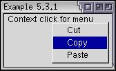

Popup Menus
In the last section, we looked at creating a menu on a menu bar. XUL also has the capability of creating popup menus. Popup menus are typically displayed when the user presses the right mouse button.
Creating a Popup Menu
XUL has three different types of popups, described below. The main difference is the way in which they appear.
- Plain PopupsThe plain popup is a popup window which appears when the user presses the left mouse button on an element. They are much like the menus on the menu bar, except that they can be placed anywhere and can contain any content. A good example is the drop down menu that appears when you hold the mouse button down over the back and forward buttons in a browser window.
- Context PopupsThe context popup is a popup window which appears when the user presses the context menu button, which is usually the right mouse button. On some platforms, this may be a different button - but it is always the button or combination of key press and mouse button which invokes a context-specific menu. On the Macintosh for example, the user must either press the Control key and click the mouse button, or hold the mouse button down for a moment.
- TooltipsA tooltip popup window will appear when the user hovers over an element with the mouse. This type of popup is usually used to provide a description of a button in more detail than can be provided on the button itself.
All three types of popups differ in the way that the user invokes them. They can contain any content, although menus are common for the plain and context popups and a simple string of text is common for a tooltip. The type of popup is determined by the element that invokes the popup.
A popup is described using the popup element. It has no special attributes and is a type of box. When invoked, it will display a window containing whatever you put inside the popup. However, you should always put an id attribute on the popup as it used to associate the popup with an element. We'll see what this means soon. First, an example:
<popupset>
<popup id="clipmenu">
<menuitem label="Cut"/>
<menuitem label="Copy"/>
<menuitem label="Paste"/>
</popup>
</popupset>As can be seen here, a simple popup menu with three commands on it has been created. The popup element surrounds the three menu items. It is much like the menupopup element. It is a type of box and defaults to vertical orientation. You will also notice that the id has been set on the popup element itself.
The popupset element surrounds the entire popup menu declaration. This is a generic container for popups, and is optional. It does not draw on screen but instead is used as a placeholder where you would declare all of your popups. As the name popupset implies, you can put multiple popup declarations inside it. Juts add additional ones after the first popup element. You can have more than one popupset in a file, but usually you will have only one.
Now that we've created the popup, it's time to make the popup appear. To do this we need to associate the popup with an element where it should appear. We do this because we only want the popup to appear when the user clicks in a certain area of a window. Typically, this will be a specific button or a box.
To associate the popup with an element, you add one of three attributes to the element. The attribute you add depends on which type of popup you want to create. For plain popups, add a popup attribute to the element. For context popups, add a context attribute. Finally, for tooltip popups, add a tooltip attribute.
The value of the attribute must be set to the id of the popup that you want to have appear. This is why you must put the id on the popup. That way it's easy to have multiple popups in a file.
In the example above, we want to make the popup a context menu. That means that we need to use the context attribute and add it to the element which we want to have the popup associated with. The sample below shows how we might do this:
Example 5.4.1: Source View<popupset>
<popup id="clipmenu">
<menuitem label="Cut"/>
<menuitem label="Copy"/>
<menuitem label="Paste"/>
</popup>
</popupset>
<box context="clipmenu">
<description value="Context click for menu"/>
</box> Here, the popup has been associated with a box. Whenever you context-click (right-click) anywhere inside the box, the popup menu will appear. The popup will also appear even if you click on the children of the box so it will work if you click on the description element also. The context attribute has been used to associate the box with a popup with the same id. In this case, the popup clipmenu will appear. This way, you can have a number of popups and associate them with different elements.
You could associate multiple popups with the same element by putting more attributes of different types on an element. You could also associate the same popup with multiple elements which is one advantage of using the popup syntax. Popups can only be associated with XUL elements. They cannot be associated with HTML elements.
Tooltips
We'll look at a simple way to create tooltips here. There are two ways to create a tooltip. The simplest way, which is much more common, is to add a tooltiptext attribute to an element for which you want to assign a tooltip.
The second method is to use a tooltip element containing the content of a tooltip. This requires you to have a separate block of content for each tooltip or have a script which sets the content, however it does allow you to use any content besides text in a tooltip.
Example 5.4.2: Source View<button label="Save" tooltiptext="Click here to save your stuff"/>
<popupset>
<tooltip id="moretip" orient="vertical" style="background-color: #33DD00;">
<description value="Click here to see more information"/>
<description value="Really!" style="color: red;"/>
</tooltip>
</popupset>
<button label="More" tooltip="moretip"/>These two buttons each have a tooltip. The first uses the default tooltip style. The second uses a custom tooltip that has a different background color and styled text. The tooltip is associated with the More button using the tooltip attribute, which is set to the corresponding id of the tooltip element. Note that the tooltip element is still placed inside a popupset element like other popup types.
Popup Alignment
By default, the popup and context windows will appear where the mouse pointer is. Tooltips will be placed slightly below the element so that the mouse pointer does not obscure it. There are cases however, where you will want to indicate in more detail where the popup appears. For example, the popup menu that appears when you click the Back button in a browser should appear underneath the back button, not where the mouse pointer is.
To change the popup position, you can use an additional attribute, position, on the popup. You can also add it to the menupopup element. This attribute is used to indicate the placement of the popup relative to the element invoking the popup. It can be set to a number of values, which are described briefly below:
- after_startThe popup appears below the element with the left edges of the element and the popup window aligned. If the popup window is larger than the element, is extends to the right. This is the value used for the drop-down menus associated with the browser's Back and Froward buttons.
- after_endThe popup appears below the element with the right edges of the element and the popup window aligned.
- before_startThe popup appears above the element with the left edges of the element and the popup window aligned.
- before_endThe popup appears above the element with the right edges of the element and the popup window aligned.
- end_afterThe popup appears to the right of the element with the bottom edges of the element and the popup window aligned.
- end_beforeThe popup appears to the right of the element with the top edges of the element and the popup window aligned.
- start_afterThe popup appears to the left of the element with the bottom edges of the element and the popup window aligned.
- start_beforeThe popup appears to the left of the element with the top edges of the element and the popup window aligned.
- overlapThe popup appears on top of the element.
- at_pointerThe popup appears at the mouse pointer position.
- after_pointerThe popup appears at the same horizontal position as the mouse pointer but appears below the element. This is how tooltips appear.
By adding one or both of these attributes to an element, you can specify precisely where the popup appears. You cannot specify an exact pixel position. The position attribute can be used with all three popup types, although you probably wouldn't change the value for tooltips.
The example below demonstrates creating a back button with a popup menu:
Example 5.4.3: Source View<popupset>
<popup id="backpopup" position="after_start">
<menuitem label="Page 1"/>
<menuitem label="Page 2"/>
</popup>
</popupset>
<button label="Pop Me Up" popup="backpopup"/>Popup Example
Let's add a simple popup menu to the find files dialog. For simplicity, we'll just replicate the contents of the Edit menu. Let's have the popup appear when clicking over the first tab panel:
<popupset> <popup id="editpopup"> <menuitem label="Cut" accesskey="t"/> <menuitem label="Copy" accesskey="c"/> <menuitem label="Paste" accesskey="p" disabled="true"/> </popup> </popupset> <vbox flex="1"> . . . <tabpanel id="searchpanel" orient="vertical" context="editpopup">
Here a simple popup that is similar to the edit menu has been added to the first tabpanel. If you right-click (Control-click on the Macintosh) anywhere on the first panel, the popup will appear. However, the popup will not appear if you click anywhere else. Note that the textbox has its own built-in popup menu which will override the one we specified.
(Next) Next, we'll look at how to create scrolling menus.